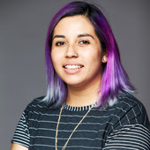

Welcoming Tania Allard as Quansight Labs co-director

Today I'm incredibly excited to welcome Tania Allard to Quansight as Co-Director of Quansight Labs. Tania (GitHub, Twitter, personal site) is a well-known and prolific PyData community member. In the past few years she has been involved as a conference organizer (JupyterCon, SciPy, PyJamas, PyCon UK, PyCon LatAm, JuliaCon and more), as a community builder (PyLadies, NumFOCUS, RForwards), as a contributor to Matplotlib and Jupyter, and as a regular speaker and mentor. She also brings relevant experience in both industry and academia - she joins us from Microsoft where she was a senior developer advocate, and has a PhD in computational modelling.
Tania and I will be working closely together and will jointly lead Labs. This is an important step in the growth of Labs - in the past two years it grew from an idea to an open source lab with over 30 members who contribute to key projects in the PyData ecosystem and beyond. Now is the right time to strengthen the leadership capability of Labs. I already found Tania and I are both very interested in and on the same wavelength about community building. That's also how we met in person for the first time, Tania and I were speaking back to back in the Open Source Communities track at SciPy'19. I'm looking forward to many interesting conversations about everything from governance in open source projects to diversity, equity and inclusion (DEI) to funding. We have complementary technological strengths and interests. Tania will be taking the lead on DevOps, visualization and IDEs while I will focus on numerical topics.
Where Labs is today
Labs has a clear mission and vision, and a model for open source contribution, funding and employment that I think is both unique and sustainable (see About for more). I'm particularly proud of the team we've built, with both established maintainers and new technical talent, as well as a strong focus on roles other than software development and on DEI. Our team includes people from 12 countries in 4 continents, and we contribute to many of the projects at the core of the PyData ecosystem.
I'm thinking about Labs projects as falling into two fairly distinct
categories: contributions to established and widely used projects, and
innovation initiatives. In the former category, I would particularly like to
mention our contributions in 2020 to NumPy, Spyder, JupyterLab and SciPy.
Contributions included a healthy mix of maintenance and innovation. For
NumPy, Spyder and JupyterLab we have 5 maintainers or contributors each, and
funding that's continuing in 2021 - from numpy.f2py and documentation
improvements to real-time collaboration in JupyterLab and completing Spyder 5
with a new plugin architecture.
Our largest innovation initiative is the Consortium for Python Data API Standards, which we created in mid-2020. This consortium brings together many array, tensor and dataframe library maintainers and has the ambitious aim to tackle the problem of fragmentation of Python array and dataframe libraries. We published our first RFC for an array API standard in November, and there's more to come in 2021.
Other significant innovation activities this year included pushing Ibis and PyData Sparse forward, two projects with potential that fill holes in the dataframe and array library landscape.
What's next?
Now that we have an established model and a set of major projects that are well-defined and continuing in 2021, we can focus more on our diverse set of smaller activities in addition to growing the team and organization. New projects in the pipeline will be announced in the coming weeks and months, be sure to watch this space. Tania will also inject her own ideas and energy, and I'm looking forward to how that will help shape and improve the Labs' roadmap.
Many people in Labs contribute to or lead projects we haven't highlighted a lot yet - from SymPy to Numba, Holoviz to IPython, stdlib.js to Zarr. The freedom to do what's needed or seems worthwhile on such projects is one of the main reasons for people to join Labs. I'd like us to get a bit better at setting concrete goals for each of those activities, which will naturally be a conversation between Labs leadership and Board, and the individual contributors to each project. Furthermore we are developing some new competencies that apply across projects. A great example is accessibility - we are starting to gain more expertise and are driving activities to improve accessibility in Jupyter and Spyder, as well as on websites of other projects.
Looking forward to what 2021 will bring, and to working with Tania on growing Labs!